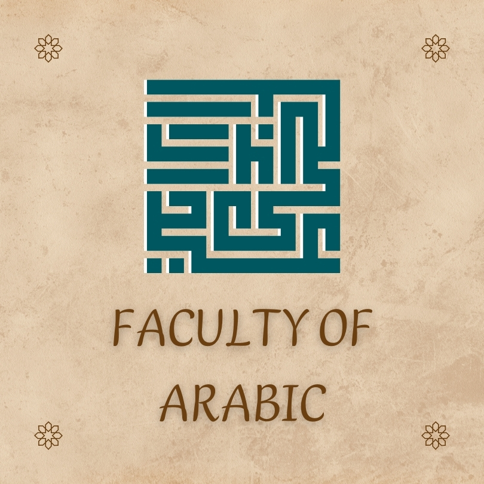

Easy to find
Resources arranged around faculties and the courses students actually take.
Find the notes, past papers and course materials your degree needs — all gathered in one place by the people who know it best.
One university. Many paths. Find yours.
Choose a faculty to find resources, course notes and exam prep for your degree.

05 / LANGUAGES↗Languages & LiteratureWords, worlds and ways of seeing 06 / BASIC & APPLIED SCIENCES↗Basic & Applied SciencesCuriosity with a methodPass it on. Your notes could be the thing that makes someone else's semester click.
Resources arranged around faculties and the courses students actually take.
A student-powered library gets better every time someone contributes.
Find material that fits your programme, semester and way of learning.